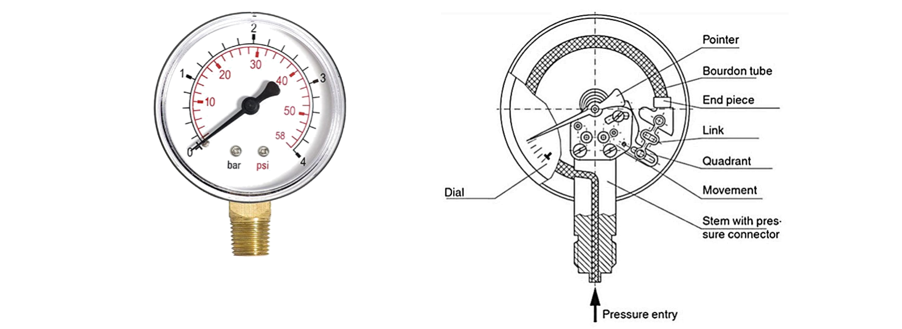
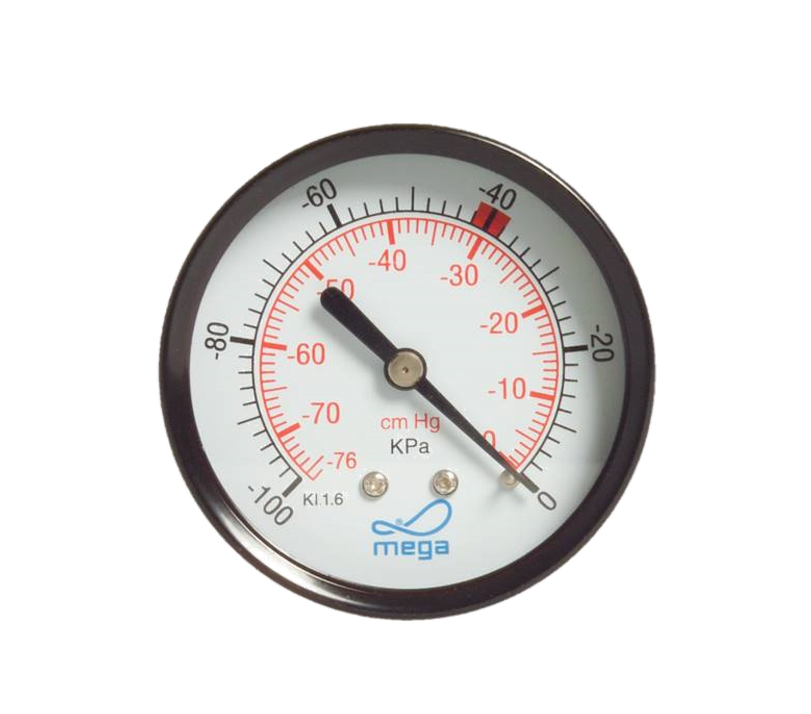
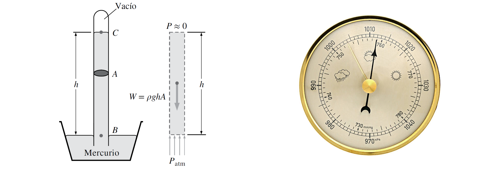
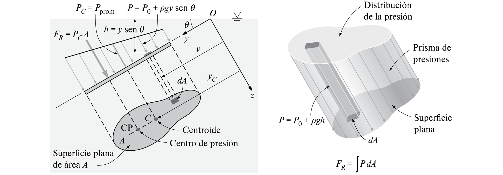
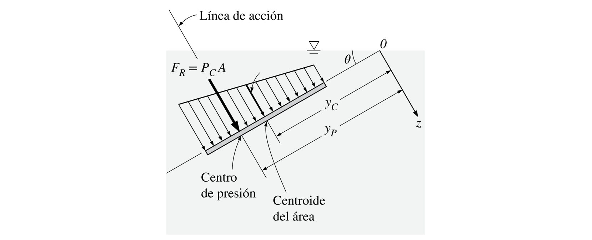
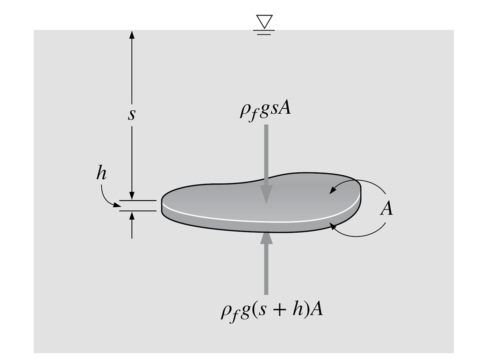
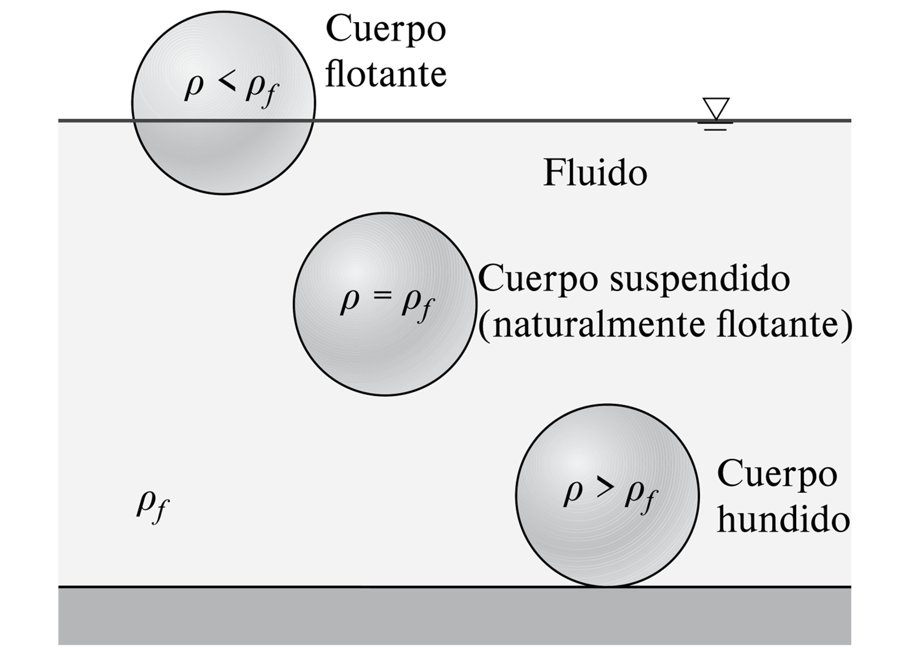

2. Estática de fluidos#
2.1. Presión hidroestática#
2.1.1. Presión en un líquido#
Analicemos el problema de uno y dos cuerpos sólidos en reposo, ambos con densidad \(\rho\).

Como ilustra el diagrama de cuerpo libre, el cuerpo sólido de volumen \(V\) está sugeto a fuerzas iguales y contrarias, equivalentes al peso del mismo, \(\rho V g\).
En el caso de dos sólidos con volúmenes \(V_1\) y \(V_2\), el de más abajo está sugeto a la fuerza por su propio peso y el peso del cuerpo sobre el mismo. La fuerza resultante en el cuerpo de abajo es, \(\rho V_1g + \rho V_2g\)
La situación es similar para un líquido contenido en un estanque. Es decir, un elemento diferencial a una distancia \(h\) de la superficie libre está sujeto a una fuerza equivalente a la columna de fluido sobre él.

Si asumimos que el área diferencial es \(dA\) y la densidad del líquido \(\rho\), la fuerza resultante es: \(\rho g h dA\).
Luego la presión estática, definida como la fuerza por unidad de área, es \(P = \rho g h\).
Debido a que el líquido es un elemento deformable e incompresible, la presión estática actúa sobre todas las caras del elemento diferencial.

En general, la presión en un punto es igual en todas las direcciones. Esto se conoce como el principio de Pascal
2.1.2. Unidades de medida de la presión#
La unidad de medida fundamental de la presión es el pascal (\(\mathrm{Pa}\)):
Sin embargo, en la práctica, esta unidad es muy pequeña. Es, por lo tanto, común el uso de múltiplos como el kilopascal (\(1~\mathrm{kPa} = 10^3~\mathrm{Pa}\)).
Otras unidades comúnes son:
Como recomendación para el curso, convertir siempre las unidades a pascal
2.1.3. Presión atmosférica#
De igual forma, los gases atmosféricos, atraídos por la fuerza de gravedad, generan una presión sobre todos los cuerpos en la tierra.

La presión atmosférica, así, es el resultado de la columna de gases atmosférico sobre una superficie.
La presión absoluta (\(P_\mathrm{abs}\)) en un elemento diferencial de fluido en un estanque es, así:
La presión atmosférica también cambia con la altura. Sin embargo, el cambio de presión se percibe en logitudes de escala de \(1000~\mathrm{m}\), debido a que la densidad de los gases atmosféricos es mucho menor que los líquidos.

En la figura, \(P_{\mathrm{O}_2}\), es la presión parcial de oxígeno (no es relevante para el curso).
Debido a la caída de la presión con la altura, la densidad del aire disminuye y la cantidad de oxígeno por \(\mathrm{m}^3\) es menor.
A 25 °C al nivel del mar, la presión atmosférica es \(1~\mathrm{atm} = 101.325~\mathrm{kPa}\).
En resumen, la presión hidroestática en un punto depende de la columna de fluido sobre él y, por lo tanto, cambia sólamente con la profundidad.

Notar que la presión en dos fluidos distintos a la misma profundidad no es la misma, debido a la diferencia de densidades.
A partir del principio de Pascal, podemos explicar el funcionamiento de una gata hidráulica

En el ejemplo, \(A_1 < A_2\).
Considerando que el fluído contenido es incompresible, \(P_1 = P_2 = F_1/A_1 = F_2/A_2\), donde concluimos que:
2.1.4. Presión en gases#
Los gases se expanden constantemente. Así, la presión en un tanque cerrado es igual en todas las direcciones.

En la figura de la izquierda, el líquido está en un contenedor vacío. Debido a que el exterior también es vacío, la columna de líquido en el tubo tiene la misma altura.
En la derecha, el gas producto de la evaporación del líquido genera una presión igual en todas las direcciones.
La presión absoluta ejercida por el gas, está dada por la diferencia de altura en el tubo, \(P_\mathrm{abs} = \rho_\mathrm{tubo} h g\), donde \(\rho_\mathrm{tubo}\) es la densidad del líquido en el tubo (\(P_\mathrm{atm} = 0\), en este caso).
2.1.5. Instrumentos para medir la presión#
Llamamos presión manométrica (\(P_\mathrm{man}\)), a la diferencia entre la presión absoluta y la presión atmosférica,
El instrumento para medir \(P_\mathrm{man}\) es el manómetro 
{kind=link}
Llamamos presión vacuométrica o de vacío (\(P_\mathrm{vac}\)), a la diferencia entre la presión atmosférica y la absoluta,
El instrumento de medida se llama vacuómetro. 
{kind=link}
Por lo general, la presión de vacío se indica con un valor negativo, para mejor interpretación, es decir \(P_\mathrm{vac} = P_\mathrm{abs} - P_\mathrm{atm}\).
El término presión barómetrica es equivalente a la presión atmosférica (\(P_\mathrm{atm}\)).
Comúnmente, se mide en milimetros de Mercurio, \(\mathrm{mmHg}\), o hectapascales, \(\mathrm{hPa}\). El instrumento de medida es el barómetro.
{kind=link}
La conversión de unidades es \(760~\mathrm{mmHg} = 1013.2~\mathrm{hPa} = 1~\mathrm{atm}\)
La siguiente figura ilustra todas las presiones

2.2. Fuerza hidrostática sobre superficies planas#
2.2.1. Fórmulas generales para una superficie#
El principio de Pascal nos permite determinar la fuerza resultante (\(F_R\)) sobre una cara de una superficie plana de área \(A\):
donde \(h_C = y_C\sin\theta\) es la distancia vertical del centroide de la superfice (\(y_C\)) al nivel libre del líquido, y \(P_0\) es la presión absoluta sobre el líquido (comúnmente, presión atmosférica).
{kind=link}
Esta fuerza resultante no actúa, necesariamente, en el centroide de la superficie. Para determinar el punto de acción, debemos analizar el torque resultante:
donde \(y_p\) es la línea de acción de la fuerza resultante.
La línea de acción, medida desde la superficie libre, está dada por la relación:
donde \(I_{xx,C}\) es el segundo momento de área respecto al eje \(x\) que para por el centroide de la superficie.
{kind=link}
Las fórmulas de \(I_{xx,C}\) depende de la geometría de la superficie.
{kind=link}
2.2.2. Caso superficicies rectangulares#
En el caso de superficies rectangulares, la distribución de presiones forma un trapecio rectángulo de sección cuadrada.
{kind=link}
Las fórmulas de fuerza resultante (\(F_R\)), así, corresponde al área del trapecio. Por el contrario, la línea de acción (\(y_p\)) no necesariamente coincide con el centroide del trapecio. Está dada por la fórmula:
{kind=link}
2.2.3. Fuerza resultante en compuertas#
Cuando analizamos la fuerza resultante en una compuerta, debemos considerar la acción de la presión en ambas caras. En la mayoría de los casos (compuerta de una represa, por ejemplo), la componente asociada a \(P_0\) se ignora, puesto a que atúa sobre ambas caras de la compuerta, y la fuerza resultante es:
2.3. Flotación#
Analicemos la fuerza resultante que actúa sobre una placa horizontal sumergida en un fluido de densidad \(\rho\).
{kind=link}
La fuerza resultante en los bordes es 0 debido al equilibro de fuerzas.
Por otro lado, el balance entre la fuerza inferior y superior es:
donde \(V\) es el volúmen de la placa.
El resultado es similar en cuerpos de forma arbitraria. Concluimos que la fuerza de flotación que actúa sobre un cuerpo sumergido, es igual al peso del volumen de líquido desplazado por el cuerpo

La posición de un cuerpo, así, depende de la relación entre la densidad del cuerpo \(\rho\) y la densidad del fluido \(\rho_f\)
{kind=link}
2.4. Referencias#
Çengel Y. A. y Cimbala M. J. Mecánica de Fluidos: Fundamentos y Aplicaciones, 4ta Ed., McGraw Hill, 2018
Capitulo 3: Presión y estática de fluidos
White F. M. Mecánica de Fluidos, 5ta Ed., McGraw Hill, 2004
Capitulo 2: Distribución de presiones en un fluido